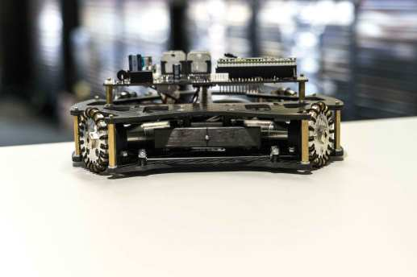
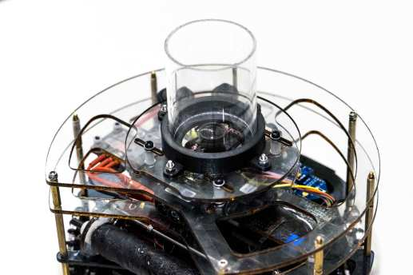
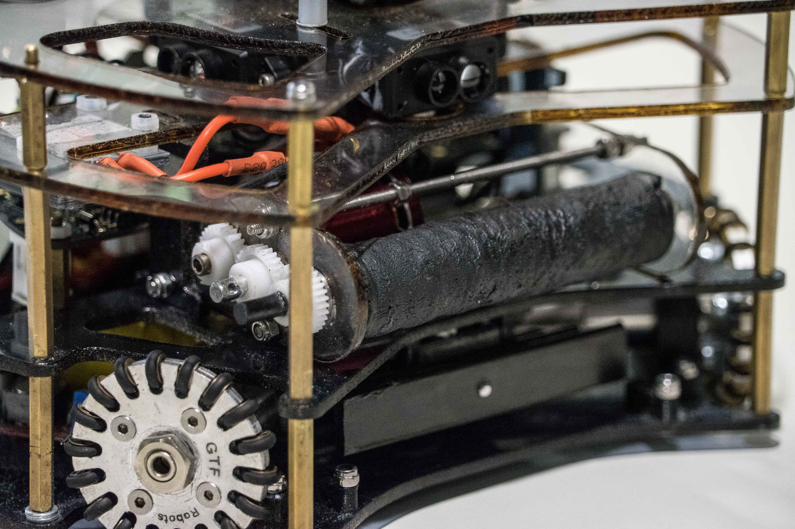
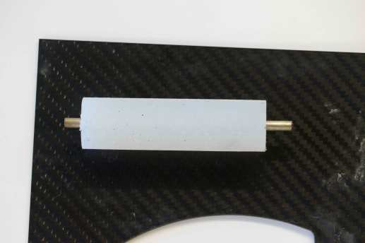
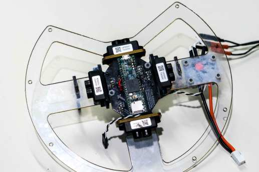
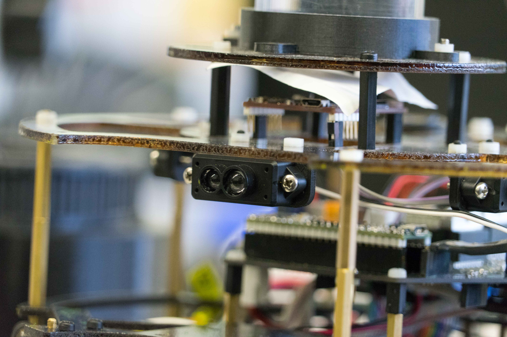
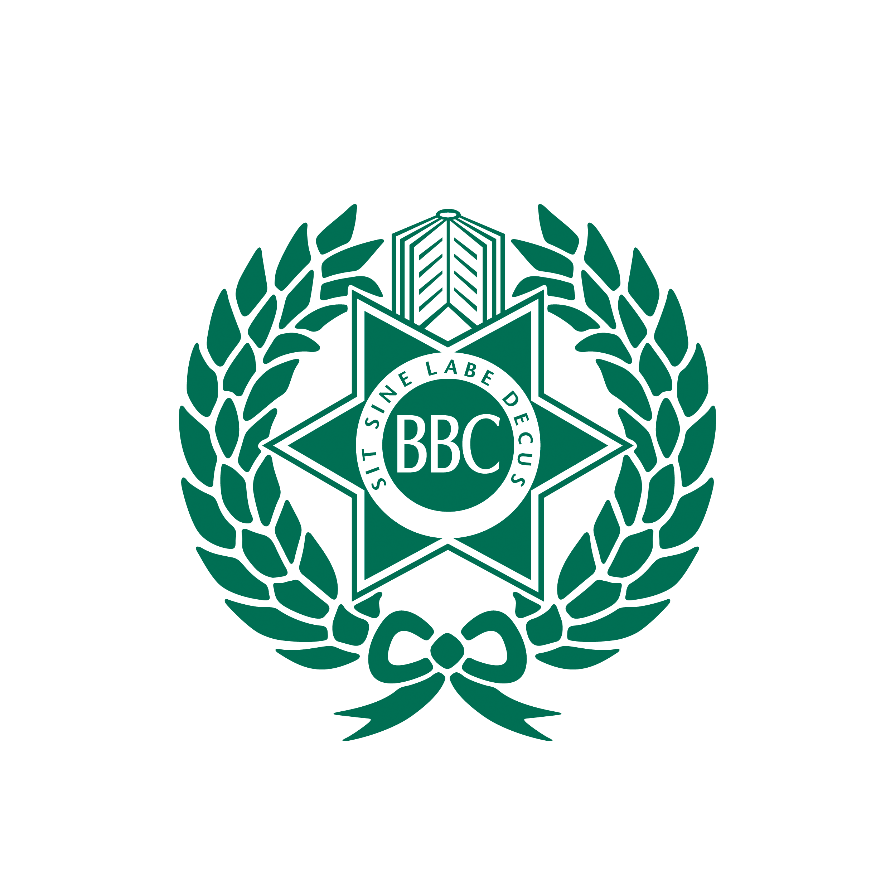
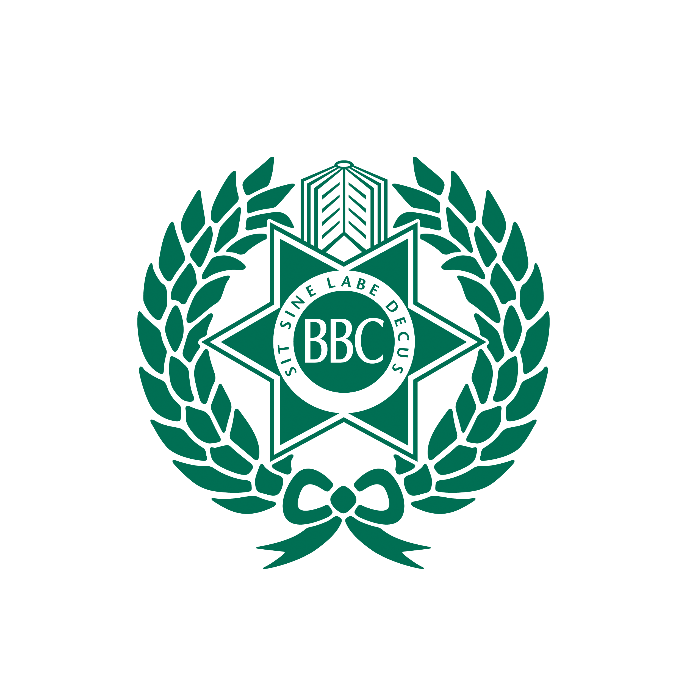

Our Team
Following a very successful 2017, FG&B has qualified to represent Australia at the Robocup Junior World Championships in Montreal, Canada in the Open Soccer competition.
To qualify for this competition, FG&B achieved the following results:
1st - Robocup Queensland State Championship 2017
1st - Robocup Australia National Championship 2017
2nd - Robocup Asia-Pacific Championship 2017
3rd - Robocup World Championship 2018
1st - Robocup World Superteam Championship 2018
For video of our matches in the 2017 Australian Competitions, please visit our or our
Our Robots
The team constructed two identical robots for the 2018 International Competition. Both robots feature self-designed 360 degree cameras, 4 PCBs and dribbler / kicker assemblies.


Previously, a spherical mirror was used in the 360 degree camera, but this was improved for 2018 by the design of a parabolic mirror giving superior ball detection range and image quality.
We also purchased new Maxon DCX19 motors, giving the robot greater performance compared to previous years.


A dribbler, powered by a brushless motor, was also designed improving the robots ball control. The roller was molded from Silicone, using a 3D printed mold.
4 Laser Rangefinders were also installed on the robot, giving improved location perception when compared to the previous method using purely the camera and goals.


These hardware improvements have resulted in significant changes to strategy in both attack and defence. A coordinate system was created, with the robot able to move to any point (or number of points) on the field by simply passing it an (x,y) coordinate.
Members
All members of FG&B are current first year Engineering students at the Queensland University of Technology and Old-Boys of Brisbane Boys' College, Australia.
Alistair English
|
Software
|
Studying:
Bachelor of Engineering (Honours) / Bachelor of Information Technology
|
Thomas Fraser
|
Software
|
Studying:
Bachelor of Engineering (Honours) / Bachelor of Information Technology
|
Thomas Hulbert
|
Electrical
|
Studying:
Bachelor of Engineering (Honours)
|
William Plummer
|
Mechanical Design & Team Management
|
Studying:
Bachelor of Engineering (Honours)
|
Cooper Richmond
|
Hardware / Electrical
|
Studying:
Bachelor of Engineering (Honours)
|
Sponsors
FG&B Robotics would like to thank everyone who has supported our team and allowed us to have the opportunity to represent Australia
GTF Robots
|

|
We thank GTF Robots for their support with the supply of the Omni-Directional Wheels used on our robots.
Their wheels provide our robots with the high amount of grip required for a robot competing in the Robocup International competition.
The CNC’d Aluminium construction provides a high strength but lightweight omniwheel.
|
Maxon Motor
|

|
We thank Maxon Motor Australia for their support with the supply of custom DCX19 motors used on our robots.
Their motors provide our robots with ample amounts of speed and power required for a robot competing in the Robocup International competition.
The custom motor and gearbox configuration provices a high impact motor with a minimal footprint.
|
OpenMV
|

|
We thank OpenMV for their support with the supply of cameras and image proccessors used on our robots.
Their cameras provide our robots with extensive image proccessing power allowing for optimal object tracking for a robot competing in the Robocup International competition.
The intergrated camera and proccesor allows for an all-in-one image proccessing solution with plently of development headroom.
|
 
